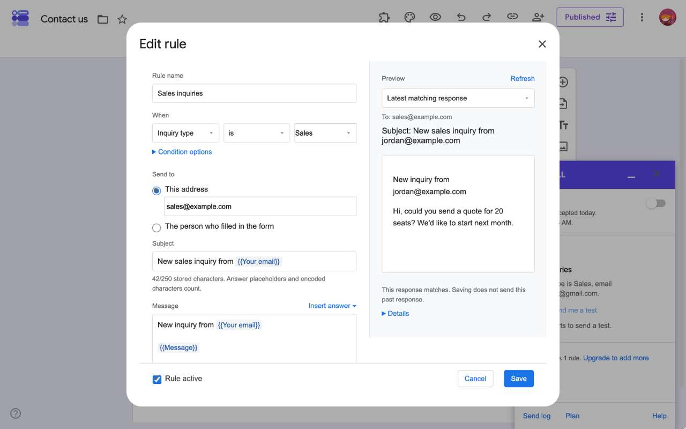
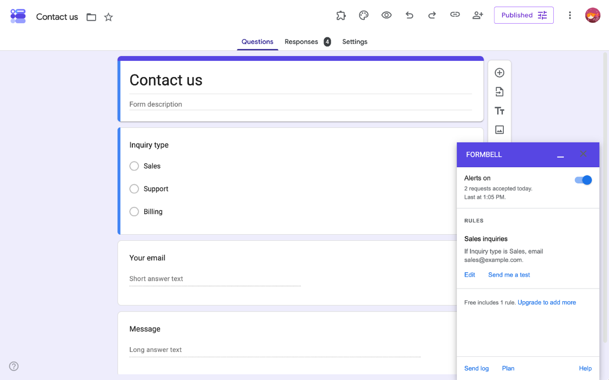
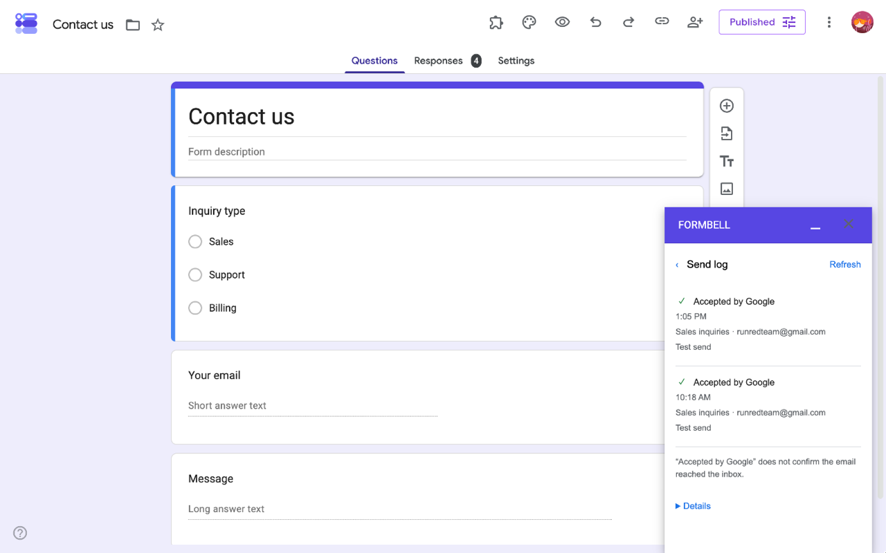

Send Google Forms email notifications based on answers
Formbell is being submitted for Google review and is not yet available. An install link will be added here after approval.
When a form collects different kinds of inquiries, the same person may not need every response. Formbell can send a notification to a fixed email address only when an answer matches your rule.
This walkthrough sends a sales inquiry to the person who handles sales. Start with a copy of your form or a small test form so the example does not email a real customer or teammate while you are learning.
Before you start
- You need editing access to the Google Form and permission to install Formbell. Your Workspace administrator may control add-on access.
- Free lets one selected rule run at a time across your Google account. Every condition type is included. Pro is only needed when you want more rules across that account's forms, within Google's limits.
- For this example, include a required multiple-choice question named Inquiry type, with choices Sales and Support. Add Name and Message questions if you want their answers in the email.
- Submit one sample response with Sales and test details you control, such as the name Sam and the message I would like a quote. Do this before enabling alerts so the sample can be used for previewing.
If all you need is Google's basic notice that a response arrived, Google Forms already provides that under Responses → More → Get email notifications for new responses. Use Formbell when you need answer-based routing or a personalized message. See Google's response-management help.
1. Create the routing rule
Open Formbell from your form's add-on menu. On a first visit, choose Start in this form if Connect this form is shown. Choose Create a rule on home to open the rule-editor dialog. If this form already has one of your rules on Free, choose Edit on that rule instead. A form with none of your rules can create one even if a different form already uses your Free slot.
Use these settings:
| Setting | Example |
|---|---|
| Rule name | Sales inquiry alert |
| Rule active | Checked |
| When | Inquiry type |
| Condition | is |
| Comparison value | Select Sales from the question's choices |
| Send to | This address |
| Recipient address | Your own email address while testing |
For this multiple-choice question, select Sales from the comparison-value list. The values come from the question's current choices. For a text question, enter the comparison value exactly; text matching is case-sensitive, and spaces matter. You do not need a second rule just to ignore Support responses.

Example screen: the form and email address differ from the test details in this guide.
2. Write the email
Set Subject to a simple title such as New sales inquiry.
In Message, type the message your teammate needs. New rules use Plain text, with paragraphs and line breaks. For example, the final preview could read:
New sales inquiry
Name: Sam
Message: I would like a quote
To insert an answer, place the cursor in Message, open Insert answer, and choose Name. Repeat for the form's Message question. The inserted chips display their question titles, such as {{Name}}, and keep their question identity if the question is renamed. If a chip says Deleted question, replace it with one for a current question. Use Insert answer rather than typing or pasting a chip label. To personalize Subject too, put the cursor there before opening the same menu.
Choose Use HTML when you need to edit supported HTML markup. An existing formatted rule may already open in HTML mode. Before switching it to plain text, review any formatting-loss confirmation. The Subject counter includes stored answer placeholders and encoded characters; follow its warning rather than counting only visible letters. Open Details for message and storage limits.
In the right-hand Preview, choose Refresh to inspect a recent matching response, To, Subject, body, and condition result. If the completed search finds no match, it shows the latest response and a no-match notice. If asked to Choose a response, select an available date; the list is not the full response history. Refresh again after changing the draft. This preview does not send email or backfill that sample response; a match alone does not establish all sending requirements. Open its Details for eligibility information.
Choose Save, check the condition, address, and subject in Save this rule?, then choose Save rule once. A successful save returns to the sidebar. Saving a rule is separate from turning on alerts for the form.
3. Preview and send a test to yourself
Use the switch beside Alerts off to turn alerts on for this form. If you use Free and Keep this rule on Free is offered, select it for Sales inquiry alert. Saving here does not automatically replace a selection on another form; choosing this rule can pause the earlier one. Free allows only one selected rule to run across the account. Send me a test stays disabled while alerts are off, with an explanation beside it.
On the saved rule, choose Send me a test. Preview before sending opens inside the sidebar. Its Response picker defaults to Latest matching response, using the saved rule and the last 30 days of responses. If the completed search finds no match, it shows the latest response and a nonmatching result.
Check the response date/time. To use a different example, choose an available date in Response and wait for its updated preview. The choices are limited, not the full history. If prompted Choose a response, select one first. Inspect the subject, body, and match result, and confirm that the test recipient is your own Google account. This self-test always goes to you; a nonmatching example does not prove the automatic rule would send. Previewing alone does not send an email.
Choose Send test to myself once to send the displayed test, or Cancel to close without sending. Check the result and the send log before trying again.

Example sidebar; the test preview appears after you choose Send me a test.
Accepted by Google in Send log means Google accepted the request. It does not confirm inbox delivery. If you also check your own inbox, treat that as a separate check. A test uses Google's sending allowance too.
4. Check the condition with a new submission
Keep the rule's fixed address set to yourself for this check. Submit a new response through the form with Inquiry type: Sales. Open Send log, choose Refresh, and look for its Automatic entry.
A response whose inquiry type is Support should not match this rule. A nonmatching answer is not an email failure, and it need not create a send-log entry. This rule does not send a notification for every response.
Once you are satisfied, review the production recipient with your teammate and use Edit on the rule to replace the test address with the correct authorized mailbox. Review the change through Save → Save rule. Confirm that alerts and the rule you intend to use are enabled.

Example send log. Acceptance does not confirm inbox delivery.
Add another route when you need it
A single rule has one condition and sends one email. To send Support inquiries to a different address, create a separate Support rule. To send a separate confirmation to the respondent, create a confirmation rule.
Free lets one selected rule run at a time across your Google account. Pro costs $4 per month or $29 per year, plus applicable tax for more rules across that account's forms, within Google's execution and Formbell's storage limits. You can keep using Free if the Sales rule is all you need.
If the notification does not appear
Check the selected Google account, the form's alert switch, the rule's active/Free status, the answer and selected comparison value, permissions, and the remaining Google allowance. If the sidebar reports that alerts need reconnecting, use Reconnect alerts when offered and check the resulting status. Reconnecting does not automatically recover earlier responses; review any retained eligible entries in Send log.
Read the log before resending. Result unknown can mean the earlier request went through, so a manual resend could duplicate it. Resending a retained entry uses the current response and rule, not an archived copy of the original message.
The log retains the latest 200 entries shared by the form's rules, with only entries from the last 30 days available to view or resend, whichever limit is reached first. Automatic processing does not send responses observed more than 48 hours after submission. Do not rely on this workflow for guaranteed inbox delivery or complete historical backfill.
For written support, email runredteam@gmail.com. Please send the step, app version, error code, and UTC time rather than form responses, recipient addresses, or license keys.
Google Forms is a trademark of Google LLC. Formbell is an independent app by Lazy Labs.